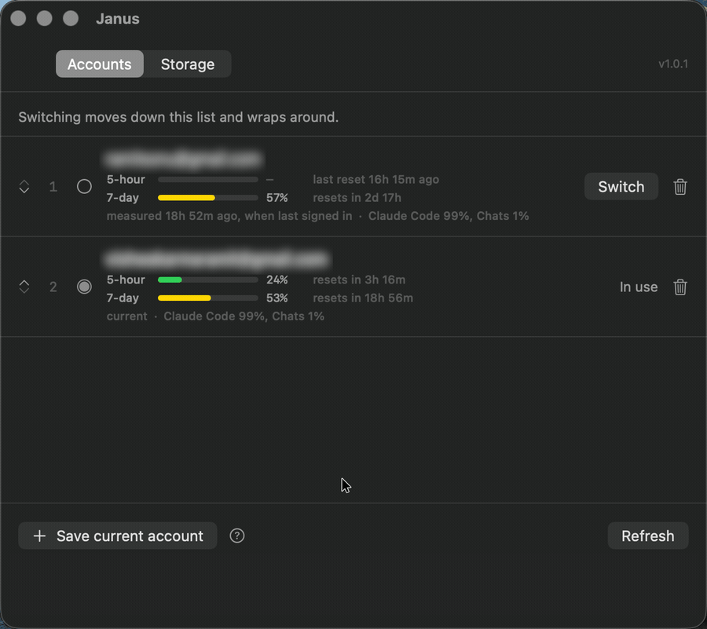

Janus switches between your Claude Code accounts from the menu bar, and shows how much of each one's limits you have spent.
$ brew install --cask --no-quarantine ramitvishwakarma/tap/janus

~/.claude.json. That pair is the whole session.Signing in as another account normally means signing out first and typing the whole thing again. Janus saves each account's session and puts it back on demand, so the second account is one click away instead of one login away. ⌘S moves through them in the order you choose.
Every saved account carries its five-hour and weekly usage, read from the file Claude Code writes. That is the number worth looking at when the decision in front of you is which account to use next.
A measured list of package manager, build, browser and editor caches, with what each one costs to lose. Everything moves to the Trash rather than being deleted, so any decision can be taken back.
A signed-in Claude Code session is two things on disk.
| Part | Where it lives |
|---|---|
| OAuth tokens | Keychain entry Claude Code-credentials |
| Everything else | ~/.claude.json |
Switching moves that pair. Janus copies the live pair into storage under the account it belongs to, then writes the other account's saved pair into place. Claude Code reads credentials at startup, so restart it to pick up the new account.
| Nothing leaves your Mac | No server, no telemetry, and no network code in the repository. |
| A failed switch changes nothing | Every switch fetches the replacement session before touching anything live, and saves the session it is about to displace. Decline a keychain prompt halfway and you stay signed into the account you started on. |
| Your settings file survives | ~/.claude.json belongs to another program and gains keys
between releases, so Janus parses what it needs and writes the rest back
byte for byte. |
| Nothing is deleted | Cache clearing calls FileManager.trashItem. It refuses
anything outside your home directory, which the code enforces, with a test
asserting every entry in the catalogue passes. |
| An account signed in elsewhere is kept | If the live account is not one Janus knows about, it is saved as a new account rather than overwritten, because those credentials exist nowhere else. |
$ brew install --cask --no-quarantine ramitvishwakarma/tap/janus
Or download the latest release and drag Janus to Applications. I sign the build ad-hoc rather than with a paid Apple Developer certificate, so macOS puts a quarantine flag on it and refuses to open it the first time. Clear the flag once:
$ xattr -dr com.apple.quarantine /Applications/Janus.app
Or build it yourself. It needs the Xcode Command Line Tools, not Xcode.
$ git clone https://github.com/RamitVishwakarma/Janus.git
$ cd Janus && ./build.sh